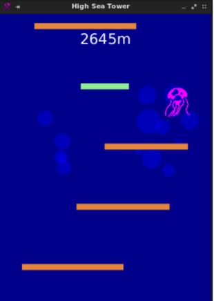
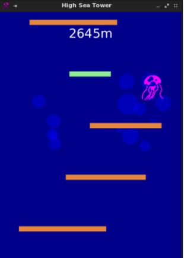

What projects have I done?
↣ Conception of a robot (school project)
⇢ Creation of a robot, programmed to follow a circuit with SimulIDE
⇢ Use of C++ language

↣ Progamming a GUI game with the library JavaFX (school project)
⇢ Coding a a jellyfish that tries to climb as high as possible in the ocean by jumping from platform to platform
⇢ Use of Java language

↣ Conception of a website
⇢ Introduction to HTML, CSS, Javascript languages
⇢ Creation of a robot, programmed to follow a circuit with SimulIDE
⇢ Use of C++ language
As the first project of Polytechnique's Software Engineering program, we had to build a hardware
and software system. This system was based on a virtual microcontroller, due to the COVID-19
pandemic.
We had to write a library in C++ in order to add various functionalities to our robot (including inputs/outputs and peripherals). For example, the robot had to move forward for a certain number of seconds and then stop. We also had to manipulate the LED lights' colors.
Of course, we had to learn about Makefiles in order to compile our code (reminder: C++ is a compiled language) and what we wrote had to be understandable and coherent.
During this project, communication was the key to success, that is why we had to explain to each other the lines of code we added before pushing the modifications on Git.
In short, this project taught us how to behave during a teamwork, we learned a lot about C++ and its use in such a hardware.
We had to write a library in C++ in order to add various functionalities to our robot (including inputs/outputs and peripherals). For example, the robot had to move forward for a certain number of seconds and then stop. We also had to manipulate the LED lights' colors.
Of course, we had to learn about Makefiles in order to compile our code (reminder: C++ is a compiled language) and what we wrote had to be understandable and coherent.
During this project, communication was the key to success, that is why we had to explain to each other the lines of code we added before pushing the modifications on Git.
In short, this project taught us how to behave during a teamwork, we learned a lot about C++ and its use in such a hardware.
↣ Progamming a GUI game with the library JavaFX (school project)
⇢ Coding a a jellyfish that tries to climb as high as possible in the ocean by jumping from platform to platform
⇢ Use of Java language

As the first game we ever had to program we had to learn about GUI and MVC architectural pattern
to understand how to make us interact with the game. While coding the game we had to use physics
formula and apply some math to make the game entertaining.
↣ Conception of a website
⇢ Introduction to HTML, CSS, Javascript languages
The goal of this project was to create my own Resume Website and my own Photography Website.
I wanted to learn these languages by creating something that could potentially be useful for
me.
I first started by learning the basics of HTML, then I wanted to learn CSS in order to style my websites. Thereafter, I wanted to add some features (such as switching between light/night mode and be able to choose type of pictures), so I had to learn Javascript.
From time to time, I still try to improve my Web Resume.
I first started by learning the basics of HTML, then I wanted to learn CSS in order to style my websites. Thereafter, I wanted to add some features (such as switching between light/night mode and be able to choose type of pictures), so I had to learn Javascript.
From time to time, I still try to improve my Web Resume.